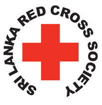
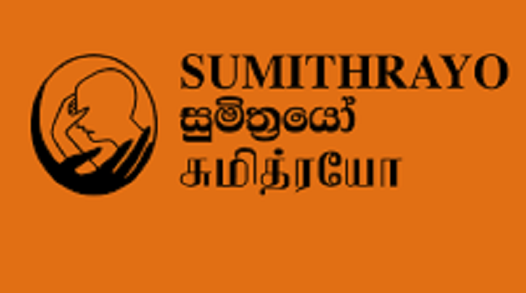
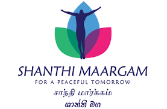
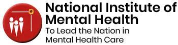

Consultants Details

The International Red Cross and Red Crescent Movement is an international humanitarian movement with approximately 97 million volunteers, members and staff worldwide, which was founded to protect human life and health
Sri Lanka Red Cross Society National Headquarters 106, Dharmapala Mawatha, Colombo 07, Sri Lanka
contact:(94) 11 2691095 , (94) 11 2691095
Email:info@redcross.lk

Sri Lanka Sumithrayo is a government approved charity founded in 1974, by late Mrs. ... Srilanka Sumithrayo are registered members of Befrienders Worldwide and function as a non-political,
non-religious organization focused on providing emotional support to help those at risk of suicide.
60/7, Horton Place,Colombo, Sri Lanka
contact: +94 11 2 682535 +94 11 2 682570
Email: slssumithrayo@gmail.com

Shanthi Maargam provides support for children and adolescents to improve their emotional well-being with the goal of breaking the cycle of violence in communities.
contact: +94717639898
Email: shanthimaargam@gmail.com

The National Institute of Mental Health conducts and supports research that seeks to understand, treat, and prevent mental illness.
NIMH, Mulleriyawa New Town
contact: +94112578234 - 7